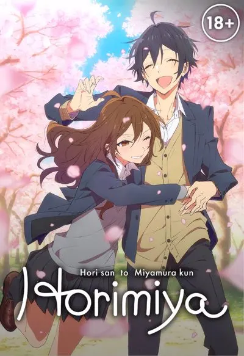
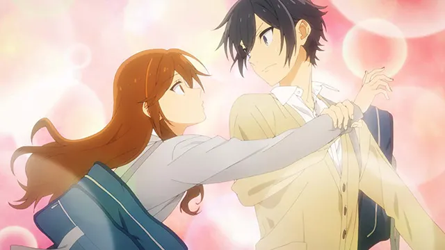
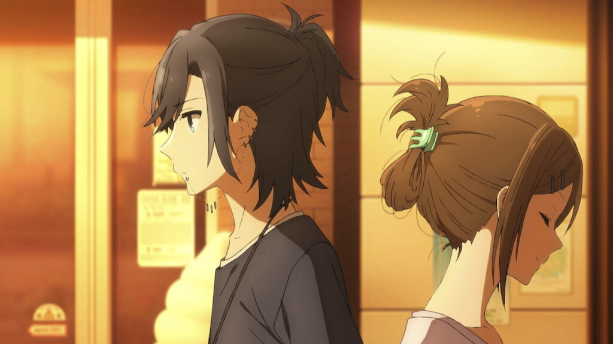
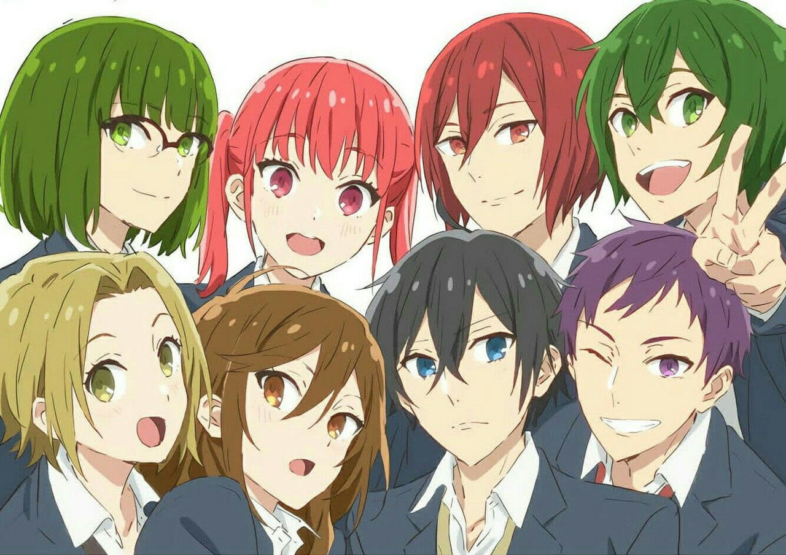

Horimiya

Hori-san to Miyamura-kun is an online manga series created by Hiroki Adachi under the pseudonym Hero. It was originally released in yonkoma format from February 2007 to December 2011on the author's website Dokkai Ahen . It was later published by Square Enix as 10 volumes under the Gangan Comics imprint from October 22, 2008 to December 28, 2011. Additional stories were published under the title Hori-san to Miyamura-kun Omake. OVAs based on the manga have been released since 2012-series.
Since 2011, Daisuke Hagiwara has been adapting the manga under the supervision of Hero. His work is published under the title Horimiya in Monthly G Fantasy. An anime adaptation of Horimiya was created by CloverWorks and the series premiered in January 2021. A live-action film and television series based on it are also planned for release in February 2021.
Kyoko Hori is a bright and popular schoolgirl, the exact opposite of her classmate, the pessimistic nerd Izumi Miyamura. Outside of school, Hori is a house girl, taking care of the house and her younger brother Sota, which she tries to keep a secret from her classmates. One day, Sota returns home with a nosebleed, aided along the way by a punk -looking stranger with piercings and tattoos. This stranger turns out to be Miyamura. He agrees with Hori that they will both keep each other's secrets from their classmates. Over time, they begin to communicate as friends, and later meet.


